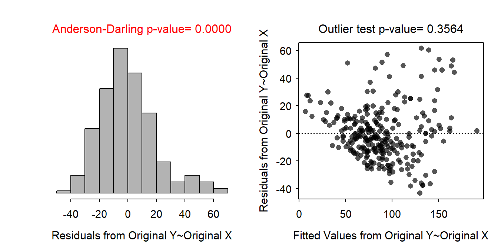
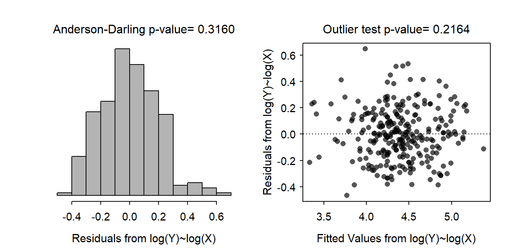
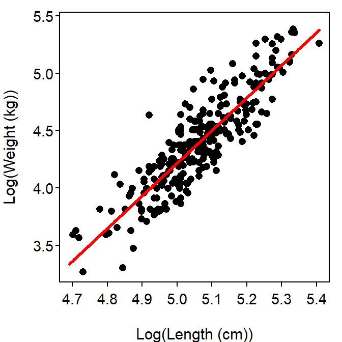

It is difficult to ultimately assess independence with the amount of information given. However, under the assumption that all Black Bears were unique (no bear was measured twice) then it seems that the data are at least roughly independent. There is evidence for a strong non-linearity and heteroscedasticity (Figure 1-Right). The residuals do not appear to be normal (Anderson Darling p<0.00005) and are right-skewed (Figure 1-Left). No significant outliers are evident (outlier test p=0.3564). A transformation will be explored to see if the assumptions can be met.
Weight-length relationships tend to follow a power function which suggests that both the weight and lengths should be transformed to the natural log scale. With this transformation there is no visual evidence for non-linearity (Figure 1-Right), the residuals appeared homoscedastic (Figure 1-Right) and normal (Anderson-Darling p=0.3160; Figure 1-Left), and there is no evidence for significant outliers (outlier test p=0.2164). Thus, the assumptions appear to be adequately met on the log-log scale.
There is a signficant relationship between the log weight and log length of Florida Black Bears (p<0.00005; Table 1; Figure 3).
Specifically, as the log length of the Black Bears increases by one unit, the average log weight increases between 2.664 and 3.030 units. On the original scale, as the length of the Black Bear increases by a multiple of 2.72 cm, the average weight changes (increases) by a multiple of between 14.4 and 20.7.
The predicted weight, corrected for back-transformation bias, for three different lengths is shown in Table 2. For example, the predicted weight for a 130 cm long Florida Black Bear is between 32.2 and 69.6 kg.

Figure 1: Histogram of residuals (left) and residual plot (right) for regression of weight on length of Florida Black Bears.

Figure 2: Histogram of residuals (left) and residual plot (right) for regression of log-transformed weight on log-transformed length of Florida Black Bears.

Figure 3: Scatterplot of log-transformed weight on log-transformed length of Florida Black Bears with best-fit line.
Table 1: ANOVA table for the linear regression of log-transformed weight on log-transformed length of Florida Black Bears.
Df Sum Sq Mean Sq F value Pr(>F)
length 1 291397 291397 775.63 < 2.2e-16
Residuals 272 102188 376 Table 2: Weights (back-transformed) for Florida Black Bears of various lengths (130, 160, and 190 cm) as predicted from the linear regression of log-transformed weight on log-transformed length.
obs fit lwr upr
1 47.32204 32.15363 69.64611
2 85.46903 58.16861 125.58242
3 139.41227 94.74279 205.14257R Appendix.
bb <- read.csv("BlackBears.csv")
bb <- filterD(bb,age>1)
lm1 <- lm(weight~length,data=bb)
transChooser(lm1)
bb$logw <- log(bb$weight)
bb$logl <- log(bb$length)
lm2 <- lm(logw~logl,data=bb)
transChooser(lm2)
anova(lm2)
cbind(Ests=coef(lm2),confint(lm2))
lens <- c(130,160,190)
nd <- data.frame(logl=log(lens))
p.logw <- predictionPlot(lm2,nd,interval="prediction")
p.weight <- exp(p.logw[,3:5])*exp(anova(lm2)[2,3]/2)